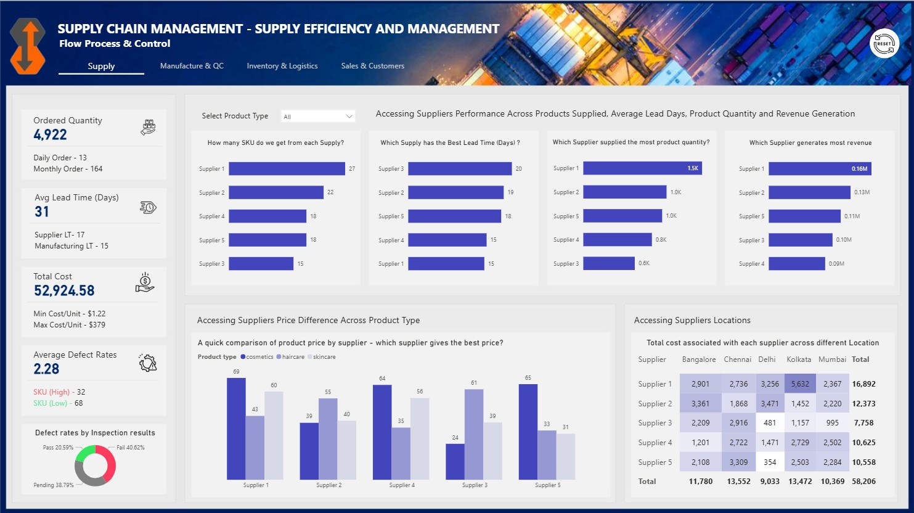

Data Analysis
Uncovering trends and patterns within complex datasets to generate actionable insights that support data-driven, evidence-based decision-making.
A Data / Business Analyst and Power BI Developer
I am a detail-oriented Business and Data Analyst / Power BI Developer with strong expertise in data modeling, SQL optimization, and interactive dashboard design, with a strong focus on Supply Chain analytics. I specialize in ETL processes, advanced Excel analytics, and building scalable reporting solutions that transform complex operational and procurement data into clear, actionable insights. I collaborate closely with stakeholders to translate business requirements into data-driven strategies that improve supply chain performance, visibility, and decision-making.

Uncovering trends and patterns within complex datasets to generate actionable insights that support data-driven, evidence-based decision-making.
Designing dynamic Power BI and Excel dashboards, visuals, and reports that translate data into clear, impactful insights tailored to stakeholder needs.
Performing database querying with SQL, alongside data cleaning, validation, and ETL processes to ensure accuracy, integrity, and accessibility across organizational systems.
Optimizing procurement and supply chain operations by analyzing sourcing, inventory, and distribution data to improve efficiency, reduce costs, and strengthen end-to-end supply chain performance.

This report provides a concise analysis of supply chain processes: Supply: Assesses efficiency and cost across product categories. Manufacturing: Evaluates capacity, target achievement rates, defect rates, and improvement areas. Logistics & Inventory: Reviews stock health, inventory practices, and cost-effective delivery options. Sales & Profit: Identifies sales and profit drivers by product, region, and customer segment.

Analyzed sports sales data to evaluate key KPIs including sales, cost, profit, units sold, and pricing. The report highlights product performance trends, profit growth opportunities, and the most profitable sales channels, providing insights to optimize pricing, product strategy, and sustainable revenue growth. These findings support data-driven decisions for maximizing profitability, efficiency, innovation, collaboration, resilience, adaptability, and market competitiveness.